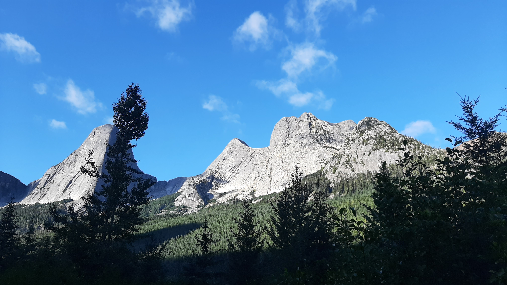
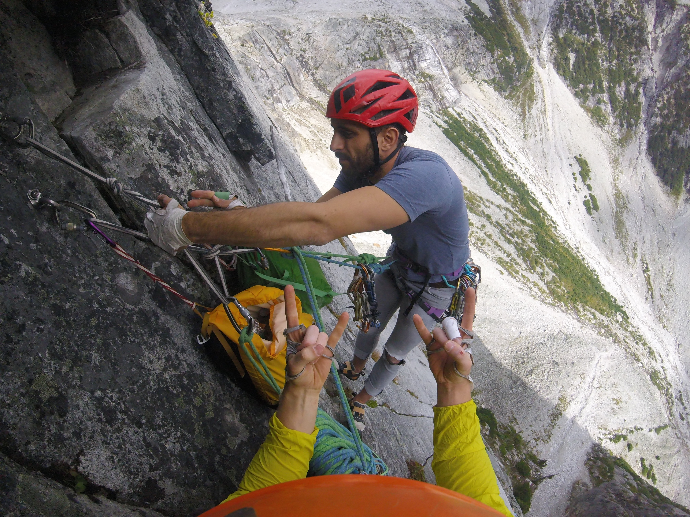
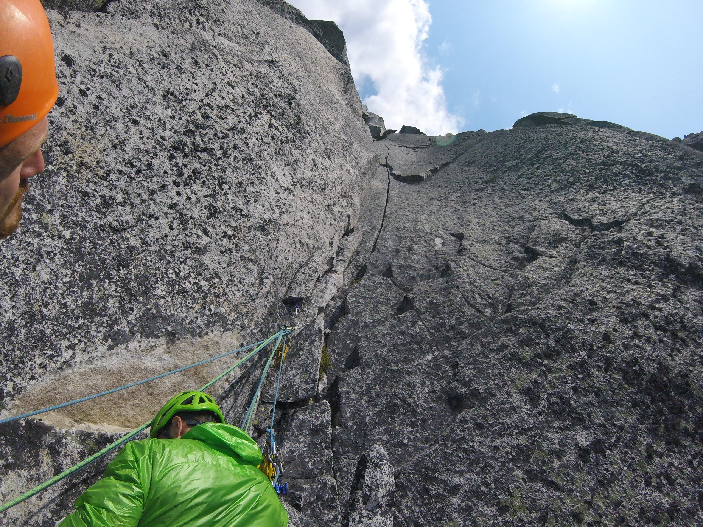
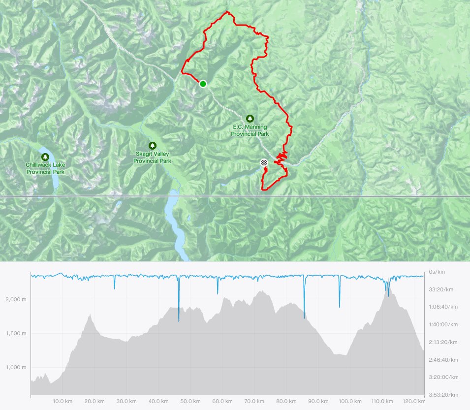

Alex Weber’s Adventure Resume
Rock Climbing
Route Development - Traditional Climbs
- Mashed Bananas 5.10b/c, Golden Canyon, Yukon 2015
- Sound Travels from the Snow to the Dark 5.10a, Paint Mountain, Yukon 2015
Alpine Routes
[note: Routes in green are part of the Classic/Updated list of the Fifty Classic Climbs of North America]
Springbok Arete 350m IV 13p 5.11a, Anderson Range, Hope, BC 2021
[Youtube]Photo
Looking up at Springbok on the approachMighty Mouse IV 8p 5.11a, Joffre Creek, BC 2019
[Youtube]
Photo
Getting ready for one of the most glorious hand cracksSunshine Crack 270m IV 9p 5.11-, Snowpatch Spire, Bugaboos, BC 2016
[Youtube]
Photo
 Unknown pitch on Sunshine Crack (RIP)
Unknown pitch on Sunshine Crack (RIP)Lotus Flower Tower V 18p 5.11-, The Cirque of the Unclimbables, NWT 2015
[note:only completed 10 pitches due to weather and time constraints]
[Youtube]Photo
 Photo fromt a different route, but same area
Photo fromt a different route, but same areaDairyland 215m 6p 5.10d, Nesakwatch Spires, Chilliwack, BC 2018
Photo
Looking up at the money pitchPaddle Flake Direct 150m III 5p 5.10, Crescent Spire, Bugaboos, BC 2016
Photo
 Looking up at an unknown pitch
Looking up at an unknown pitchRed Dihedral 455m IV 12p 5.10b, The Incredible Hulk, Eastern Sierras, CA 2024
Photo
 Last pitch
Last pitchRegular Route 242m III 5p 5.10b, Third Pillar of Dana, Eastern Sierras, CA 2024
Photo
 Looking up at Third Pillar on the approach
Looking up at Third Pillar on the approachDirect North Buttress 667m V 21p 5.10-, Bear Mountain, North Cascades, WA 2017
[Youtube]
Photo
 Looking down from one of the last pitches on a smokey day
Looking down from one of the last pitches on a smokey dayPup Buttress D+ 10-11p 5.10a, Harvey’s Pup, North Vancouver, BC 2023
Widowmaker Arete 500m 12p 5.10a, Crown Mountain, North Vancouver, BC [Youtube]
Yak Check 450m III 12p 5.10a, Yak Peak, Fraser Valley Area, BC [Youtube]
Ensawkwatch Enchainment 5km III 18p 5.9 var., North & South Nesakwatch Spires & Mt. Rexford, Chilliwack, BC [Youtube] 2018
Northeast Buttress V 25p 5.9, Slesse Mountain, Chilliwack, BC [Youtube] 2017
Escape Velocity 135m 7p 5.9-, Mt Habrich, Squamish, BC
Northeast Ridge 455m IV 10p 5.9 var., Bugaboo Spire, Bugaboos, BC 2015
[Youtube]Needs More Cow Bell 214m 6p 5.8+, Boxcar Mountain, Cathedral Lakes, BC 2023
NE Buttress 400m 10p 5.6, West Lion, North Vancouver, BC [Youtube]
North Ridge 600m III, 5.4, Tricouni, Whistler, BC 2021
[Youtube]West Ridge 455m III 5.4 free solo, Pigeon Spire, Bugaboos, BC 2015
[Youtube]
Multi-pitch Rock Climbs
Yankee Clipper 15p sport 5.12a, The Jungle, El Potrero Chico, Mexico
Borderline / Angel’s Crest / High Plains Drifter 14p trad 5.11c, The Chief, Squamish BC
Gulag Archipelago 4p sport 5.11c, Red Wall, Smith Rock, Oregon
New Life 5p trad 5.11b, North Walls, Squamish, BC
Fogducker trad 4p 5.11a, Slhanay, Squamish, BC
Wonderful Thing About Tiggers trad 7p 5.11a, Fluffy Kitten Wall, Squamish, BC
The Grand Wall 9p trad 5.11a A0, The Chief, Squamish, BC
Cruel Shoes into Grand Wall 12p trad 5.11a A0, The Chief, Squamish, BC
Capilano Classic 3p trad 5.11a, Vancouver, BC
Krimo Gold 5p trad 5.11a, The Chief, Squamish, BC
Estrallita 12p sport 5.11a, La Estrallas, El Potrero Chico, Mexico
Guaranteed Rugged 33p sport 5.10d (on-sight), Marble Canyon, BC, Canada 2022
[note: longest multi-pitch sport climb in North America?]Photophobia 5p trad 5.10d, Slhanay, Squamish BC
Pipeline 4p trad 5.10d off-width, Slhanay, Squamish, BC
Right Wing 5p trad 5.10d PG13, Slhanay, Squamish, BC
The Great Game 4p trad 5.10d (on-sight), Slhanay, Squamish, BC
Borderline / Angel’s Crest 15p trad 5.10d (red-point), The Chief, Squamish, BC
Sunset Strip 12p trad 5.10d, Grand Wall, Squamish, BC
Humanality 6p sport 5.10d (on-sight), Tonsai Wall, Railay, Thailand
Crystal Flame 4p sport 5.10d (on-sight), Candlestick Area, Railay, Thailand
Stairway to Heaven 16p sport 5.10d, Grand Wall, Squamish, BC
Rock-On Direct / Ultimate Everything 13p trad 5.10c, The Chief, Squamish, BC
St. Vitus’ Dance / Karen’s Math / Memorial Crack / Squamish Buttress 13p trad 5.10c (on-sight), The Chief, Squamish, BC B
Bulletheads East 4p trad 5.10c (on-sight), The Chief, Squamish, BC
Treasure of Sierra Madres 7p sport 5.10c (on-sight), Mota Wall, El Potrero Chico, Mexico
Over the Rainbow (5.10b var.) / Boomstick / Squamish Buttface (5.10a var.) 16p trad 5.10b (on-sight), The Chief, Squamish, BC
Black Orpheus 11p trad 5.10a (on-sight), Oak Creek Canyon, Red Rock, Nevada
Hairpin 4p trad 5.10a (on-sight), Papoose, Squamish, BC
Regular Route 303m 12p 5.9, Fairview Dome, Tuolumne Meadows, CA 2024
Kor-Ingalls Route 4p 5.9 (on-sight), Castleton Tower, Utah
The Nose 28p trad and aid VI 5.9 C2, El Capitan, Yosemite, California, USA 2022
[note: fixed to Sickle, climbed over four days and three nights, slept on summit]Crimson Chrysalis 9p trad 5.8+ (on-sight), Cloud Tower, Red Rock, Nevada
Royal Arches 15p III/IV 5.7 A0 (on-sight), Yosemite, California, USA 2022
Banana Peel 8p 5.7 PG13 by headlamp, Apron, Squamish, BC
Redpoint - Sport Climbs
Lox Stock and Two Smolts on Bagels 5.12a, Paradise Valley, Squamish, BC
Princess Eyes 5.11c/d, Phra Nang Beach, Railay, Thailand
Knucklehead 5.11c, Knucklehead, Cypress Falls, North Vancouver, BC
Stumped 5.11c, Morning Glory, Skaha, BC
Swamptart 5.11c, Vinyl Village, Yukon
Thumbstruck 5.11b, Grassy Glades, Skaha, BC
Desperate Measures 5.11b, McIntyre Bluff, Yukon
Pin Heads from Space 5.11b, Rock Gardens, Yukon
White on Rice 5.11b, White Mountain, Yukon
On-sight - Sport Climbs
Dans ta face 5.11+, Montagne du Tranchant, Lanaudiere, QC 2019
Alevin and the Chipmunks 5.11c, Red Wall, Paradise Valley, Squamish, BC
Grin and Bear It 5.11c, Doctors’ Wall, Skaha, BC
Wings of Desire 5.11c, The White Wall, Skaha, BC
Clippity-Doo-Dah 5.11b/c, The Pillary, Squamish, BC 2024
Chalant 5.11b, The Pillary, Squamish, BC 2024
Wingman 5.11b, Sully’s Hangout, Vancouver, BC
Thriller Off the Void 5.11b Mixed, Murrin Park, Squamish, BC
Being There 5.11b, Morning Glory, Skaha, BC
Just Basking 5.11b, Diamondback, Skaha, BC
Lightly Toasted 5.11b, Llama Wall, Smith Rock, Oregon
The Compromise 5.11b, Rogue’s Gallery, Squamish, BC
Constant Gardener 5.11b, Sully’s Hangout, Vancouver, BC
Fuzzy Undercling 5.11b, Military Wall, Red River Gorge, KY
Glitter Gulch 5.11b, Sweet Pain Wall, Red Rock, NV
Sour Pain 5.11b, Sweet Pain Wall, Red Rock, NV
My One Muscle 5.11a, Sully’s Hangout, Vancouver, BC
Great Grandaddy mixed 5.11a, Murrin Park, Squamish, BC
Villainous 5.11a, Morning Glory, Skaha, BC
Totally Villainous 5.11a, Morning Glory, Skaha, BC
Cytotoxic 5.11a, Diamondback, Skaha, BC
Entering Relativity 5.11a, Llama Wall, Smith Rock, Oregon
Good Times 5.11a, Fern Hill, Squamish, BC
Solitary Confinement 5.11a, Fern Hill, Squamish, BC
Lubo 511a, Sully’s Hangout, Vancouver, BC
Desert Dessert 5.11a, Middle East Wall, Frenchman Coulee, WA
Two Pumped Chumps 5.11a, Mota Wall, El Potrero Chico, Mexico
Best Route in Minnesota, The 5.11a, Escher World, Railay, Thailand
Beauty and the Beast, 5.11a, Tonsai Roof, Railay, Thailand
No Name 5.11a, Dum’s Kitchen, Railay, Thailand
Mutual of Omaha 5.11a, Wild Kingdom, Railay, Thailand
Krabi! Krabi! 5.11a, The Defile Wall, Railay, Thailand
Muay Thai 5.11a, Muay Thai, Railay, Thailand
Kratoy (Lady Boy) 5.11a, One-Two-Three, Railay, Thailand
Nut Cracker 5.11a, The Keep, Railay, Thailand
Babo Does Thailand 5.11a, The Keep, Railay, Thailand
Balance Beam 5.11a, Playground, Red River Gorge, KY
Captain Blondie Sinks the Ship 5.11a, Boneyard, Red River Gorge, KY
Basqueing in Your Affection 5.11a, Golden Canyon, Yukon
Trash Pump 5.11a, White Mountain, Yukon
Redpoint - Traditional Climbs
Familial Ethics 5.11b, Murrin Park, Squamish, BC 2024
Yorkshire Gripper 5.11b, Smoke Bluffs, Squamish, BC
Partners in Crime 5.11a, Smoke Bluffs, Squamish, BC
Kangaroo Korner 5.11a, Smoke Bluffs, Squamish, BC
Ginger 5.11a, Vinyl Village, Yukon 2015
Rainy Day Dream Away 5.10c, Bulletheads, Squamish, BC
Coogee Crack 5.10c, Chief, Squamish, BC
Thorax Complaint 5.10c, Smoke Bluffs, Squamish, BC
Yoga Man 5.10c, McIntyre Creek, Yukon
Split Beaver 5.10b (OW), Smoke Bluffs, Squamish, BC
On-sight - Traditional Climbs
Climb and Punishment 5.10d, Smoke Bluffs, Squamish, BC
Who’s Your Daddy? 5.10d Mixed, Nightmare Wall, Squamish, BC
Centre Street 5.10c, Smoke Bluffs, Squamish, BC
Elephantiasis 5.10c, Smoke Bluffs, Squamish, BC
Crossroads 5.10c, Garibaldi Estates, Squamish, BC
Where’s Carruthers? 5.10c, Scarface, Indian Creek, Utah
Sinsemilla 5.10c, Sunshine Wall, Frenchman Coulee, WA
Maranatha 5.10c, Bridge Area, New River Gorge, WV
Rat Mother Crack 5.10c, Paint Mountain, Yukon
Popeye and the Raven 5.10c Mixed, Smoke Bluffs, Squamish, BC
Unknown Offwidth 5.10+, Reservoir Wall, Indian Creek, Utah
A Little Testis 5.10b, Murrin Park, Squamish, BC 2024
SM’s Delight 5.10b, Smoke Bluffs, Squamish, BC
White Rabbit 5.10b, Smoke Bluffs, Squamish, BC
Bob’s Your Uncle 5.10b, Top Shelf, Squamish, BC
A Pitch in Time 5.10b, Chief, Squamish, BC
Lumberland 5.10b, Smoke Bluffs, Squamish, BC
Erica 5.10b, Smoke Bluffs, Squamish, BC
Jabberwocky 5.10b, Smoke Bluffs, Squamish, BC
Geneside 5.10b, Murrin Park, Squamish, BC
Life is Suffering 5.10b, McIntyre Creek, Yukon
Fistful of Potash 5.10b Mixed, Wall Street, Moab, Utah
Hand Jive 5.10b, Malamute, Squamish, BC
Unnamed 5.10, Reservoir Wall, Indian Creek, Utah
Cypress Crack, 5.10a, Cougar Crag, Cypress Falls, North Vancouver, BC
The Zip, 5.10a, Smoke Bluffs, Squamish, BC
Run Life a Thief 5.10a, Smoke Bluffs, Squamish, BC
Sex Party 5.10a, Middle East Wall, Frenchman Coulee, WA
Agathla Unchained 5.10a, Agathla Tower, Frenchman Coulee, WA
Sentry Crack 5.10a, Murrin Park, Squamish, BC
Nubile Woman 5.10a, Smoke Bluffs, Squamish, BC
Split Decision 5.10a, Shannon Falls, Squamish, BC
Flying Circus 5.10a, Smoke Bluffs, Squamish, BC
Neat and Cool 5.10a, Smoke Bluffs, Squamish, BC
Mercury Vapour 5.10a, Papoose, Squamish, BC
Flying Circus 5.10a, Smoke Bluffs, Squamish, BC
Crescendo 5.10a, Golden Canyon, Yukon
Shark Fin 5.10a, Golden Canyon, Yukon
Dr. Carl 5.10-, Reservoir Wall, Indian Creek, Utah
Aid
University Wall C2, first 5 pitches, including The Shadow, U-Wall, Squamish, BC 2023
Wrist Twister C2+, first pitch, Tantalus Wall, Squamish, BC - solo 2023
Lost Arrow Spire Tip 2p aid III 5.7 C2, Yosemite, California, USA 2022
Cannabis Wall C2, first five pitches, Tantalus Wall, Squamish, BC 2022
[note: slept on G7 portaledge]Cannabis Wall C2, first two pitches, Tantalus Wall, Squamish, BC 2022
Bouldering
Bonspiel V5, Halfway Log Dump, Ontario
Fire Breather V5, D&D Boulder, Yukon
Pocket Problem V4, Grandwall Boulders, Squamish, BC
Face Burster V4, Cypress Mountain, North Vancouver, BC
Jenna’s Jewelry V4, Kraft Boulders, Red Rock, NV
Ice Climbing
Curtain Call 120m WI6, Rampart Creek, AB 2020
[note: second; not clean]Ice Nine 95m WI6, Ice Fields Parkway, AB 2020
[note: second; not clean]Oh Le Tabernac 60m WI5+, Ice Fields Parkway, AB 2020
[note: second; not clean]Weeping Wall, Central Pillar, 180m WI5+, Ice Fields Parkway, AB 2017
[note: second; not clean]Carlsberg WI5, Lillooet, BC 2018/2019?
[note: lead; not clean]Polar Circus 400m WI5, Icefields Parkway, AB 2022
[note: did not finish last 30m due to bad ice]Elliot Left Hand 130m WI5, David Thompson Hwy, AB 2022
[note: lead; not clean]The Plum 300m WI5, Pemberton, BC
Deeping Wall WI5, Marble Canyon, Lillooet, BC
Malignant Mushroom WI5, The Ghost, AB 2017
[note: second; clean]Nothing But the Breast 145m WI4+, Dave Thomson Highway, AB 2020
Cauthorn-Wilson 240m WI4, Washington Pass, Washington, US 2023
Good Luck and Bad Dreams 115m M6+ WI4, Dave Thomson Highway, AB 2020
[note: second; not clean]Night N Gale 150m WI4, Bridge River, BC 2023
Two Minutes for Hooking 140m WI4, Squamish, BC 2021
Synchronicity 300m WI4, Duffey Lake Road, Lillooet, BC
Obsession 2p 55m WI4, Orient Bay, ON
Professor Falls III 5p 210m WI4, Banff, AB 2017
Closet Secrets WI4, Duffey Lake Road, Lillooet, BC
Plum-Lite WI4, Pemberton, BC
Icy BC 105m WI4, Marble Canyon, Lillooet, BC
Louise Falls 115m WI4, Lake Louise, AB (didn’t top out; too cold) 2017
Unnamed FA 20m WI4 - Hanover Lake, Vancouver, BC 2022
[note: 22km + 1100m elevation in snowshoes]The Column WI4-, Rambles Right, Duffey Lake Road, Lillooet, BC
Oregon Jack WI3+ [note: didn’t top out]
End of the Line 100m WI3, Dave Thomson Highway, AB 2020
Mouse Trap 330m WI3, Hope, BC
Entropy 120m WI3, Whistler, BC
Sunshine 45m WI3, Front Ranges, AB
Soleil WI3, Whitehorse
Bridal Veil Falls WI3, BC
A Scottish Tale WI3, Squamish, BC
Picadilly Circus WI3, BC
Cherry Ice, Lillooet BC
Norvan Falls, Vancouver, BC 2022
Highline
Lost Arrow Spire, 15m line, did not finish set-up (two man team), Yosemite, California, USA 2022
Lighthouse Park, 25m line, 5 steps, West Vancouver, BC Lighthouse Park, solo setup 25m line, West Vancouver, BC 2022
Lighthouse Park, various lines from 25-70m, West Vancouver, BC 2019
Backseat Driver FM, 23m long / 20m high, Cypress Falls, North Vancouver, BC (Independent setup) 2017
Original Line 30m long / 200m high, North Gully, The Chief, Squamish, BC (Independent setup. Only managed to walk 5 steps) 2017
Scrambles
Castle Towers, Garibaldi Park, BC (see Running) 2023
Grimface Mountain, Cathedral Park, BC 2023
Sky Pilot, Squamish, BC 2022
Mt Seymour (1,449) December 2021
Peak 6500 (1964) and some more; 1948m ascent, 25km, 13.75 hrs August 2021
Mt Hanover (1748m) + Deek’s Peak (1600m?); 1648m ascent, 33kkm; 13.5 hrs May 2021
Mt Brunswick (1788m); 1588m ascent, 15km; 9 hrs car to car March 2021
Mt Cathedral (1737m); along with Coliseum Mountain (1,440m) and Mt Burwell (1,540m); 15hrs car to car August 2019
Black Tusk, Whistler, BC 2019
Mt Windsor (1688m) Summer? 2018
Sky Pilot, Squamish, BC August 2016
Eastpost Spire, Bugaboos, BC late July 2016
Cypress Peak, Whistler, BC July 2016
Golden Ears, BC April 2016
Hiking
Windy Joe to Frosty Mountain Loop, 30km and 1,200m elevation, E.C. Manning Park, BC - one day 2024
Rockwall Trail, 54km, Kootenay National Park - four days 2023
Tenquille Lake, 30km, Pemberton, BC - three days (day hike to Ogre Lake on second day) 2022
Cathedral Park: Lakeview Mountain + Boxcar; Diamond Trail; Rim Trail + Grimface Mountain, 70km, Cathedral Provincial Park, BC - 5 days (day hikes on days 2,3 and 4) 2020
Three Brothers, 40km, E.C. Manning Park, BC - three days (day hike to Nicomen Lake on second day) 2020
Mowich Camp via Skyline Trail from Strawberry Flats, 30km, E.C. Manning Park, BC - two days 2020
Rainbow Lake and Hanging Lake, 25km, Callaghan Valley, Whistler, BC - two days 2020
Western Uplands Trail, First Loop, 40km, Algonquin Park, ON - three days with my nephew 2019
First Half of Sunshine Coast Trail, 110km, Sunshine Coast, BC - five days 2018
Black Tusk, 40km, Garibaldi Provincial Park, BC - two days 2018
Kalalau Trail, 30k, Kauai, Hawaii - two days 2017
Panorama Ridge, 30km, Garibaldi Provincial Park, BC - two days 2017
Chilkoot Trail, 53km, Dyea, Alaska - several days 2015
Grizzly Lake / Divide Lake / Talus Lake, 60km, solo, YT - two days 2014
Slim’s River West Trail, 60km, solo, YT - two days 2014
West Coast Trail, 75km, Vancouver Island, BC - several days 2014
La Cloche Silhouette Trail, Killarney Provincial Park, ON; 80km - 30hrs 2013
Skiing
- Claire Kees Hut, Whistler, BC 2022
- Banana Chute on Fissile Peak
Heart Strings Couloir, Duffey Lake, BC 2021?
Garibaldi Neve Traverse, Garibaldi, BC; 40km with 1,750m of ascent - two days 2018
Various backcountry runs in Duffey Lake region, BC 2015 - present
Various backcountry runs in Yukon circa 2014-2015
Running
Helm Creek to Castle Towers to Rubble Creek, Garibaldi, BC; 41k with 3,000m ascent - 13 hrs 2023
ForeTrails Hallow’s Eve, North Vancouver, BC; 21.1k trail race with 866m ascent - 2.5hrs 2022
FatDog 70, Manning Park, BC; 111k trail race with 4,700m of ascent - 20hr 2019
Kneeknacker 50, North Vancouver, BC; 48k trail race with 3,000m of ascent - 7hr 2019
Howe Sound Crest Trail x2; from Cypress to Deeks Lake and back: 48k solo and unsupported with 4,000m ascent - 13hr 2019
Forerunners Super Summit 50k; 1,500m ascent - 6hr 2019
Mamquam Lake and back; 46k solo and unsupported with 2,400m ascent - 8hr? 2019
Grouse to Mt. Unnecessary and back; 45k solo and unsupported with 2,050m ascent - 7hr 2019
Bear Mountain, Victoria, BC; 10k 2018
Squamish 50, Squamish, BC; 50k trail race with 2,500m of ascent - 7hr 6mins 2016
Ironman, Whistler, BC; 3.8km swim, 180km bike, 42.2km run - 12hr 17mins 2016
Survival of the Fittest, Squamish, BC; 15k trail race with 1,050m of ascent - 1hr 56mins 2016
Vancouver Marathon, Vancouver, BC - 3hr 27mins 2016
Cap Crusher, Vancouver BC; 13k trail race with 650m of ascent - 1hr 18mins 2016
Run Ridge Run, Coquitlam, BC; 25k trail race with 1,400m of ascent - 3hr 4mins 2015
Klondike Trail of ’98 International Road Relay, Skagway, Alaska / Whitehorse Yukon; Leg 5 (22.2km) - 1hr 57mins 2015
Yukon River Trail Marathon - 4hr 20mins 2015
Klondike Trail of ’98 International Road Relay, Skagway, Alaska / Whitehorse Yukon; Leg 6 (25.6km) - 2hr 11mins 2014
Half Ironman, Muskoka, ON; 1.9km swim, 94km bike, 21.1 km run - 6hr 2mins 2013
Road2Hope Hamilton Marathon, Hamilton, ON - 3hr 28mins 2012
Around the Bay Road Race; 30km - 2hr 38mins 2012
Cycling
Early Bird Special - Fixed Gear - 210km with 2130m ascent, 8hrs 59mins - Vancouver, BC 2021
Triple Crown: 130km with 2600m ascent, 8 hrs? - North Shore, Vancouver, BC 2021
200km Breve - 3 Hump Camel - 8hr? - BC 2016
Pacific Populaire; 100km bike ride on a fixed gear - time? - Vancouver, BC 2016
200km Breve - 10hr? - Vancouver, BC 2015
Kluane Chilkat International Bike Relay, Haines Junction, YT / Haines, AK; 238.3 km bike race, solo - 11hr 18mins 2013 2014
600km Breve - 34hr - Ontario 2013
400km Breve - 18hr - Ontario 2013
TNT (Toronto - Niagara Falls - Toronto) Hairshirt Classic Double Century; 320km bike ride - 14hrs 59mins - Ontario 2013
300km Breve - 17hr - Ontario 2013
200km Breve - 10hr - Ontario 2013
160km Hamilton - Toronto - Hamilton; fixed gear bike - time? - Ontario 2013
Canoeing
Powell Forest Canoe Route - 57 km, 8 lakes, 5 portages - 5 days 2022
Indian Arm - 2 days - 2017/8?
Yukon River - Carcross to Dawson - 5 days? 2014/5?
Kawartha Lakes - 2 days 2013
Various multi-day canoe routes in Algonquin